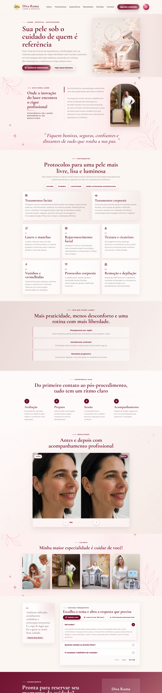

BELEZA & ESTÉTICA
Diva Roma Laser
Cuidado e identidade em cada detalhe
Minha atuação
Desenvolvi o site institucional da Diva Roma Laser com um layout personalizado, pensado para traduzir o cuidado e a identidade da clínica em sua presença digital. O projeto reúne uma apresentação elegante e uma estrutura responsiva, conectando o visual da marca à experiência de quem navega.
Identidade e direção visual
Trabalhei a composição das páginas para valorizar a identidade da Diva Roma Laser e apresentar o conteúdo da clínica com clareza. A organização dos elementos e os espaços entre as seções ajudam a construir uma leitura leve, com atenção aos detalhes e à harmonia do conjunto.
A proposta visual acompanha o universo da beleza e da estética, com animações delicadas e realces sutis ao passar o cursor sobre os elementos interativos. Esses acabamentos valorizam a elegância do layout e traduzem o cuidado da marca em uma experiência digital acolhedora.
Estrutura e navegação
Organizei o conteúdo em uma sequência que facilita a apresentação da clínica e a compreensão das informações. O objetivo foi unir uma interface personalizada a uma navegação intuitiva, para que o visitante possa explorar o site com facilidade.
Responsividade e experiência do usuário
Desenvolvi uma estrutura que se adapta a celulares, tablets e computadores, preservando a legibilidade dos textos e a organização dos elementos em diferentes tamanhos de tela. O cuidado com a usabilidade orienta a experiência: um site agradável de explorar, com informações claras e uma apresentação consistente com a marca.
